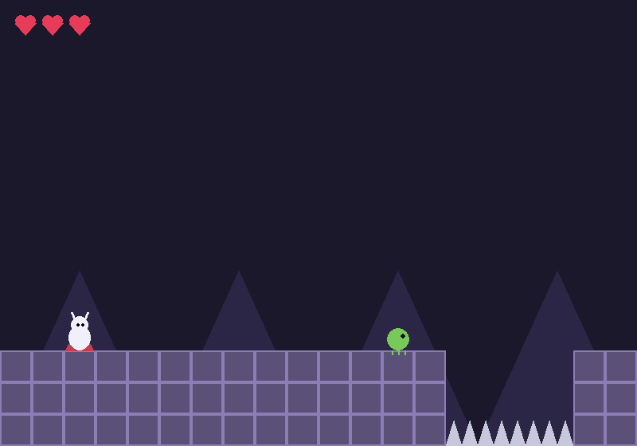

- 5 niveles encadenados con checkpoints (banderas grises).
- Corre, salta (¡doble salto!), haz dash y ataca con la aguja.
- Desde el nivel 4 hay enemigos voladores.
- Dos jefes: uno en el nivel 3 (5 golpes de aguja, pégale por el lado) y una polilla que se lanza en picada en el nivel 5.
- Cronómetro y récord de tiempo en
record.txt.
Necesita: Python 3 + pygame · Linux, Windows y Mac
⬇ Descargar .zip (12 KB) 🎮 Jugar en el navegador▶️ Cómo jugar
- Descarga y descomprime el zip.
- Instala pygame:
pip install pygame - Corre
python3 silk.py(en Windows:python silk.py; en Linux/Mac también sirve./jugar.sh).
🎮 Controles
| Flechas | correr |
| ESPACIO | saltar (doble salto) |
| X | atacar |
| SHIFT izq. | dash |
| R | reiniciar |
| ESC | salir |
⌨️ Cambiar los controles
Abre controles.txt (está junto a silk.py) y cambia la tecla después del =. Así viene de fábrica:
izquierda = left derecha = right saltar = space atacar = x dash = left shift reiniciar = r salir = escape
Nombres válidos: letras (a, b...), flechas (up, down, left, right), space, return, tab, left shift, left ctrl y números. Si escribes una tecla que no existe, el juego avisa y usa la de siempre.
✏️ Haz tu propio nivel
Los niveles están en nivel1.txt a nivel5.txt (lista NIVELES arriba de silk.py). Son dibujos de texto: cada letra es un cuadrito.
# | bloque |
E | enemigo |
^ | pincho |
C | checkpoint |
M | meta |
P | donde empiezas |
J | jefe |
. | nada |
Edita el dibujo, guarda, y corre: python3 silk.py
- Los enemigos y el jugador necesitan un
#debajo, si no se caen. - Con doble salto llegas a unos 5 cuadritos de alto y unos 8 de largo.
- Con J la meta se abre solo al vencer al jefe.
🔧 Para cambiar cómo se siente
Arriba de silk.py: GRAVEDAD, SALTO, VELOCIDAD, SALTOS_MAX (¡pon 3 para triple salto!), VIDAS, DASH_VEL, JEFE_VIDA...